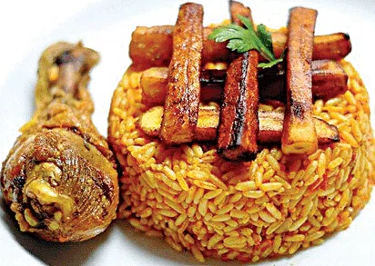
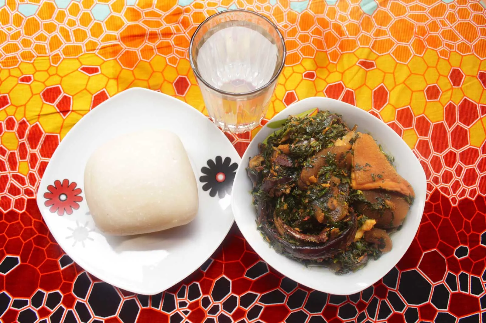

My Favorite Meal
The name of my favourite meal is jollof rice and chicen, it originates from west/sub-saharan africa. See the lists of ingredients below:
TABLE OF INGREDIENTS
| Ingredients | Measurements |
|---|---|
| Parboiled rice | 4Cups |
| Chicken | 600g |
| Knorr chicken Powder | 5 teaspoons |
| Vegetable Oil | 1 bottle |
| Water | 2 cups |
| Chopped red onion | 1 medium |
| Sliced white onion | 1 medium |
| Big red bell pepper | 1 |
| Scotch bonnet pepper | 15pieces |
| Tomato Puree | 1/4 |
| Fresh tomatoes | 2 cups |
| Curry Powder | 1 teaspoon |
| Nutmeg | 2 sachets |
| Thyme | 1 teaspoon |
| Hot chili peppers | 4 pieces |
| Spicity | 1 teaspoon |
STEPS TO PREPARE THE MEAL
- In a pot, combine the chicken, curry powder, thyme and 2 teaspoons of knorr chicken powder. Allow to simmer for 15 minutes in some water.
- Remove the chicken, add 1/4 oil to the pot and half sliced onion. Lightly fry the onion before adding the chicken pieces
- In a blender liquidize the tomatoes, chopped onion, chili peppers, red bell pepper, scotch bonnet pepper, adding a little water or stock to help blend smoothly.
- Add the tomato mixture on the fried chicken along with 3 teaspoons of knorr chicken powder and fry until dry
- Stir the cooked rice into the tomato mixture along with little stock and little water.
- Serve hot and enjoy



